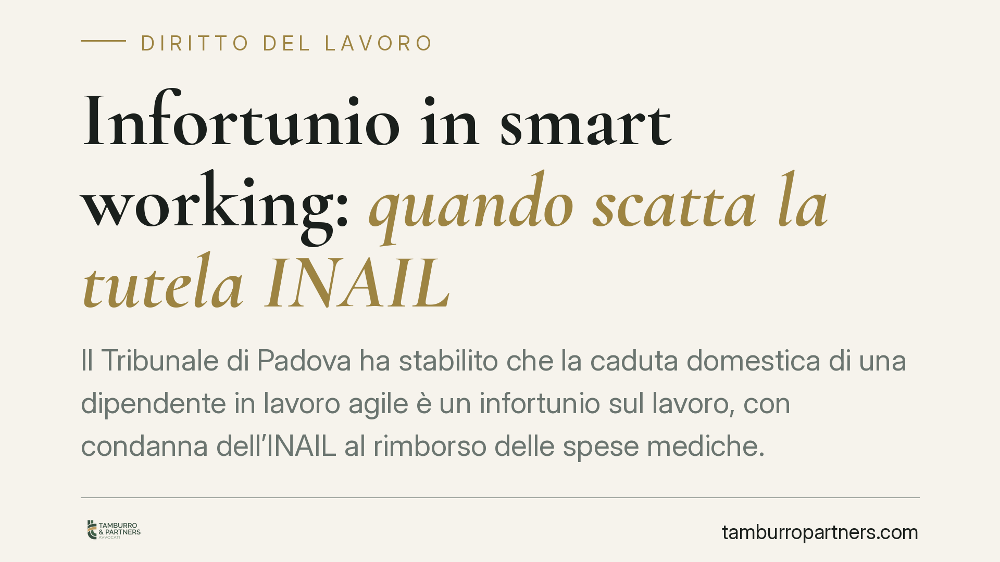

Infortunio in smart working: quando scatta la tutela INAIL
Il Tribunale di Padova ha stabilito che la caduta domestica di una dipendente in lavoro agile è un infortunio sul lavoro, con condanna dell'INAIL al rimborso delle spese mediche. La decisione fissa criteri chiari sul perimetro della tutela assicurativa quando l'attività si svolge fuori dai locali aziendali.

Il caso
Una dipendente dell'Università di Padova, mentre lavorava in modalità agile presso la propria abitazione, cade e riporta lesioni. L'INAIL nega l'indennizzo. Il Tribunale di Padova, con pronuncia del maggio 2025, ribalta la posizione dell'istituto e lo condanna al rimborso delle spese mediche anticipate dalla lavoratrice, assistita dal sindacato Fgu Gilda Unams.
La questione centrale è antica ma oggi attualissima: fino a che punto arriva la copertura assicurativa quando il luogo di lavoro coincide con la casa del dipendente?
Inquadramento normativo
Il riferimento è l'art. 23 della Legge 81/2017, che disciplina il lavoro agile (comunemente "smart working"). La norma prevede espressamente che il lavoratore ha diritto alla tutela contro gli infortuni sul lavoro e le malattie professionali anche per le prestazioni rese all'esterno dei locali aziendali.
La copertura, però, non è illimitata. Opera a condizione che l'infortunio sia riconducibile alla prestazione lavorativa e che le scelte organizzative e logistiche del lavoratore siano coerenti con l'esecuzione del lavoro. In altri termini, serve un nesso tra l'evento dannoso e l'attività svolta per conto del datore.
È qui che si colloca la "occasione di lavoro", concetto chiave della materia assicurativa (art. 2 del d.P.R. 1124/1965): l'infortunio è indennizzabile quando l'evento trova la sua causa, anche solo occasionale, nello svolgimento dell'attività lavorativa. Non serve che il lavoro sia la causa diretta; basta che abbia creato le condizioni in cui l'infortunio si è verificato.
Cosa dice la decisione
Il Tribunale ha ritenuto che la caduta fosse avvenuta in un contesto riconducibile all'esecuzione della prestazione, e non a un'attività del tutto estranea e personale. Questo è il discrimine: un infortunio durante una pausa fisiologica, uno spostamento funzionale al lavoro o un movimento collegato all'operatività resta nel perimetro della tutela. Un evento legato a una scelta puramente privata, scollegata dal lavoro, no.
La pronuncia conferma un orientamento favorevole al riconoscimento, purché il lavoratore dimostri il collegamento tra l'infortunio e la prestazione agile.
Implicazioni pratiche
Per il lavoratore in smart working, la decisione rafforza la consapevolezza che la tutela INAIL non si interrompe sulla soglia di casa. Restano però due nodi operativi.
Primo: l'onere della prova. Dimostrare il nesso con l'attività lavorativa è responsabilità del lavoratore. In assenza di testimoni, in ambiente domestico, la ricostruzione dell'evento diventa delicata.
Secondo: la coerenza organizzativa. L'accordo individuale di lavoro agile dovrebbe definire fasce orarie, modalità e luogo della prestazione. Più l'infortunio si colloca dentro questo perimetro, più solida è la posizione.
Per il datore di lavoro, la sentenza suggerisce di curare la redazione degli accordi individuali e l'informativa sui rischi, prevista anch'essa dalla Legge 81/2017. Una gestione documentale accurata riduce il contenzioso e chiarisce i confini della tutela.
Cosa fare in concreto
- Denunciate subito l'infortunio al datore di lavoro e all'INAIL, rispettando i termini: la tempestività rafforza la credibilità della ricostruzione.
- Documentate l'evento con certificazione medica dettagliata, indicazione di orario, luogo e attività in corso al momento della caduta.
- Conservate l'accordo di lavoro agile e ogni evidenza (email, log di accesso, calendario) che collochi l'infortunio nella fascia operativa concordata.
- Verificate l'informativa sui rischi ricevuta dal datore: la sua presenza o assenza incide sulla valutazione complessiva.
- In caso di diniego INAIL, valutate l'opposizione amministrativa e, se necessario, l'azione giudiziale, raccogliendo preventivamente tutti gli elementi probatori.
Consigliamo a lavoratori e datori di non sottovalutare la fase documentale: nel lavoro agile, dove manca il controllo visivo del contesto aziendale, la prova scritta fa la differenza tra il riconoscimento e il rigetto della domanda.
---
*Contributo informativo a cura di Tamburro & Partners - Avv. Giuseppe Tamburro. Non costituisce parere legale.*
Ogni storia di lavoro ha i suoi tempi.
Se gestisci HR e vuoi un confronto su contenzioso, ispezioni o licenziamenti, scrivi allo studio. Ti rispondiamo entro un giorno lavorativo.